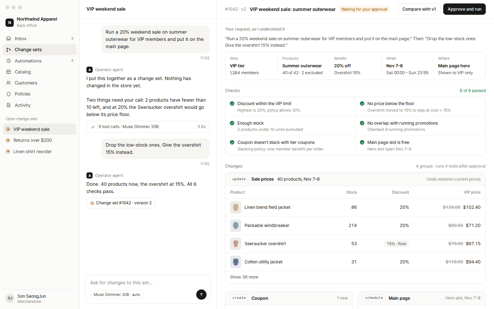
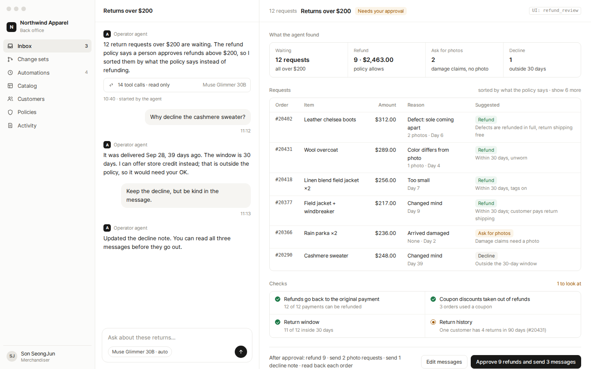
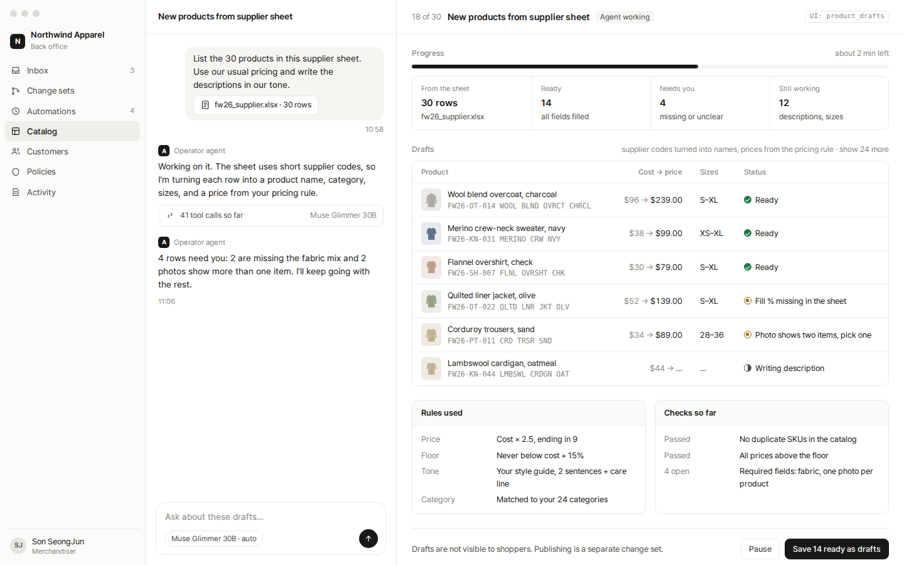
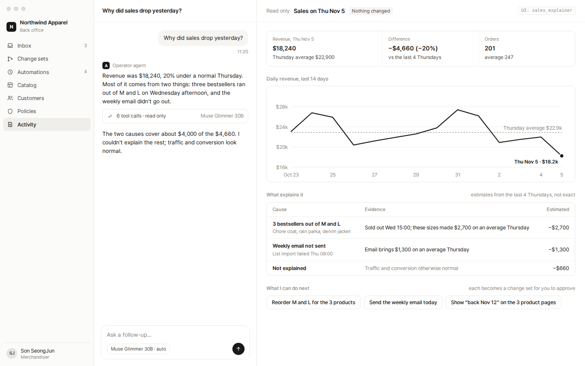

change_set“Run a 20% weekend sale…” · interpretation, checks, grouped changes, preview, approve, undo together
refund_reviewStarted by the agent · 12 returns sorted by what the policy says, one approval for the batch, messages to read first
product_drafts“List the 30 products in this sheet” · live progress, supplier codes into names, rows that need a person
sales_explainer“Why did sales drop yesterday?” · read only, estimated causes, next steps that become change sets